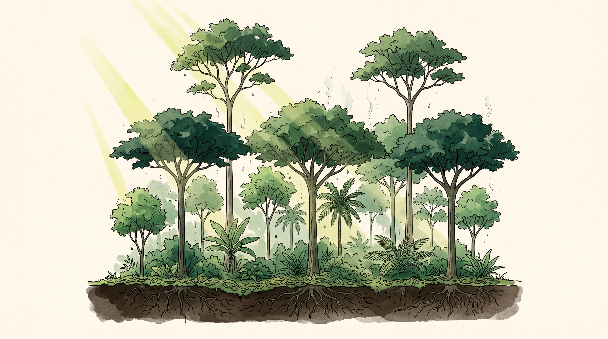

Siembra tu
propio clima
Del clima global al predio, y de vuelta al mercado.
Los 7 principios de
inmunidad del bosque
Empezamos por el clima porque es la única variable que casi nadie cree poder cambiar. Y es la primera que vas a cambiar.
Tres cosas que te llevas hoy
La agricultura es
protagonista del clima

Todo lote descubierto
es cambio climático
- Sin cobertura, el suelo pierde carbono a la atmósfera.
- Sin plantas, no hay exudados: la microbiota entra en disbiosis.
- Sin sombra, el suelo se calienta y el agua se evapora antes de infiltrar.
El suelo desnudo no es neutral. Está emitiendo.
Si todos los que trabajamos la tierra subiéramos ese porcentaje anual de materia orgánica en el suelo, compensaríamos todas las emisiones globales.
Rattan Lal · Premio Nobel de la Paz 2007 (IPCC) · Premio Mundial de la Alimentación 2020

El clima global no lo
cambias tú. El de tu
predio, sí.
Un microclima son cuatro variables
que puedes mover con plantas
La sombra de un estrato alto baja varios grados el suelo de abajo.
La transpiración de la biomasa devuelve agua al aire del predio.
Una barrera rompe la velocidad y corta la evaporación.
Los estratos reparten la luz en vez de dejarla golpear el suelo.
Ninguna de las cuatro se compra. Las cuatro se siembran.
El bosque como termostato


Policultivo en 3D:
toda la columna de luz
- Árboles altos y medios que dan sombra y biomasa de poda.
- Arbustos y frutales en el estrato intermedio.
- Hortalizas en la cama, coberturas vivas debajo.
El monocultivo usa una sola altura de la columna. Desperdicia luz, y con la luz, agua.
La estructura que sostiene el microclima
Rompen el viento, marcan la curva de nivel y alojan enemigos naturales.
Refugio permanente de mariquitas, avispas parasitoides y crisopas.
Atrapamoscas y cucaracheros trabajan si encuentran dónde pararse.
El microclima y el control biológico son el mismo diseño visto dos veces.
Cada punto de carbono orgánico
es un tanque de agua
| Incremento de CO | Agua adicional L/m² | Agua adicional L/ha | CO₂ capturado t/ha |
|---|---|---|---|
| +1 % | 14,4 | 144.000 | 132 |
| +2 % | 28,8 | 288.000 | 264 |
| +3 % | 43,2 | 432.000 | 396 |
| +4 % | 57,6 | 576.000 | 528 |
Dra. Christine Jones · amazingcarbon.com.au

por hectárea. Eso ganas si tu suelo pasa del 2 % al 4 % de carbono orgánico.
Es un reservorio que ninguna infraestructura fabricada te vende a ese precio. Y se llena solo, con biomasa.
Y de vuelta
al mercado
Porque un microclima que produce comida que nadie compra es un jardín, no una finca.
El mercado está medio vacío
en lo que más importa.
Hojas de balance de alimentos FAO · ENSIN · Perfil Nacional MinSalud
Ese hueco es tu gran oportunidad, porque
vas a buscar personas que quieren cuidarse.
Cadena corta: menos manos, más margen

familias fieles. No necesitas miles de clientes: necesitas dos docenas que te compren todas las semanas y que sepan tu nombre.
Distancia máxima al centro de consumo: 30 a 40 minutos. Menos de una hora.
Contra qué precio te comparas
Ahí es donde compra hoy. Ese es el número con el que te va a comparar.
Te sacas del mercado solo. Tu diferencial es «sin venenos», no el precio premium.
Mismo precio, mejor comida, cara conocida. Eso es lo que no puede copiar el intermediario.
Dónde no entrar
- Supermercados grandes: el volumen se come el margen y el nombre se pierde.
- Plataformas que te vuelven un proveedor anónimo entre cientos.
- Intermediarios que compran barato y cuentan tu historia por ti.
En todos esos canales pierdes justo lo que te hace caro de reemplazar: la relación directa.
Sistemas Participativos
de Garantía
Open Farms · certificación entre pares
Biomasa en varios estratos, cero suelo desnudo, carbono que retiene agua. El clima de tu predio es una decisión de diseño.
Veinte familias, treinta minutos, precio de supermercado convencional. El margen se queda donde se hizo el trabajo.
Siembras tu clima y acortas tu cadena.
Los dos extremos del mismo principio.

Define a quién le vas
a vender. Con nombre propio.
- Una persona, un restaurante o una familia. Concreta, no un segmento.
- A cuántos minutos está de tu finca.
- Qué compra hoy, dónde lo compra y a qué precio.
Formulario en la comunidad · se entrega antes del próximo miércoles
Principio 2 · Microorganismos
El bosque es el donante
Los videos se liberan el lunes: la práctica completa de reproducción de microorganismos de montaña, desde la recolección del mantillo.
Ve ubicando el bosque nativo más cercano a tu finca. Ese es tu donante.
Recorrido completo por La Huerta
Bosque, agua, cultivos, pecuaria, biofábrica y restaurante. Cada estación es un principio que después se estudia por separado.